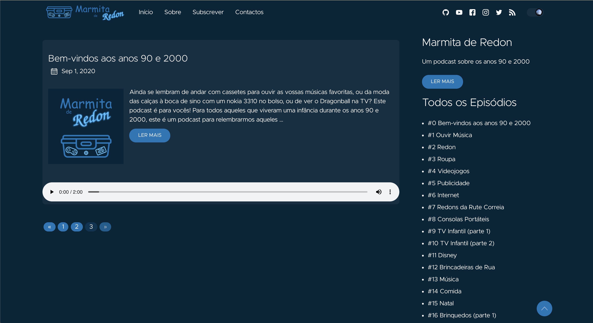
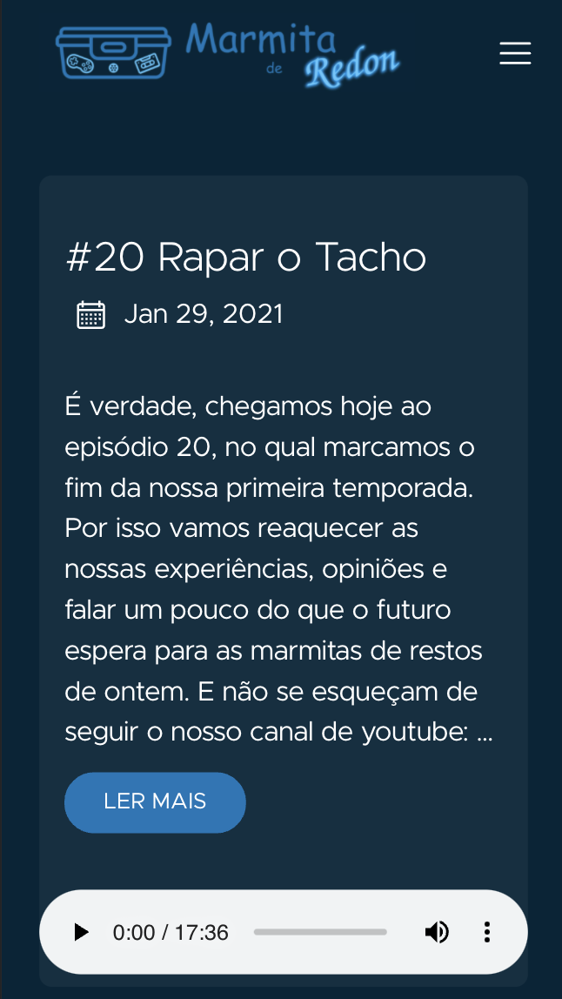
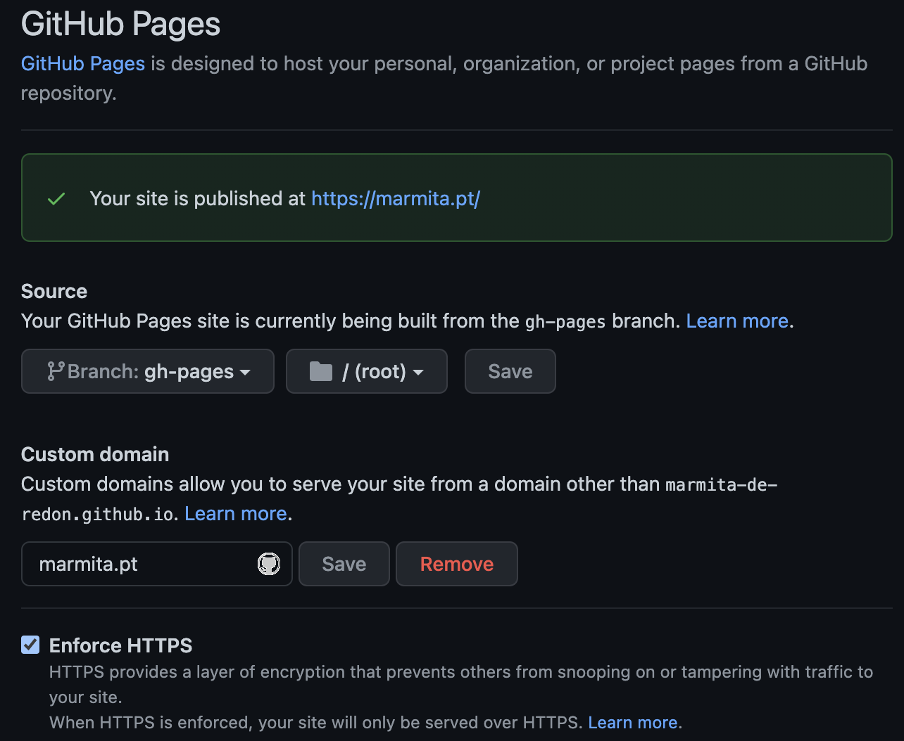
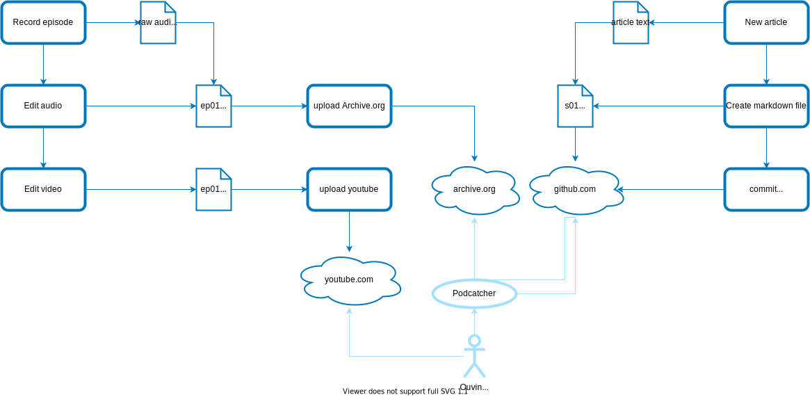

name: inverse layout: true class: center, middle, inverse --- name: impact layout: true class: center, middle, impact, content --- name: title layout: true class: title center --- name: content layout: true --- template: title name: main-title .content[ <br><br><br><br><br><br><br><br><br><br><br><br> ### Build and host your podcast for free .small[ How to leverage open source tools so everyone can host and automate a podcast ] ] --- # About me ## Tiago Carreira .left-column[ - Lisbon 🇵🇹 → Rio de Janeiro 🇧🇷 - DevOps Engineer<br> - Hobbies: .small[ - Sports (running, cycling, rock climbing) - Music (clarinet, piano, guitar) - Audiovisuals (photography, video, **podcasting**) - Open Source <br><br><br><br> ] ] .rigth-column[ .center.pic-circle[ <img src="img/tcarreira.jpg" width="180"> ] .center.no-bullets.tiny[ **website:** tiago.carreira.pw<br> **telegram:** @tcarreira<br> **github:** github.com/tcarreira<br> **twitter:** @tiagogcarreira ] ] --- layout: false name: agenda # Build and host your podcast for free .small[ How to leverage open source tools so everyone can host and automate a podcast ] <br><br><br> - Why - Recording - Editing - Website - Publishing - Automation --- # Options, too many options... .center.comparison.small[ | | Hire a professional | Platform for<br>podcasters | Media hosting <br>(eg: soundcloud) | Self-Hosted | Marmita de Redon | |-------------------|:------------------------------:|:----------------------------------:|:--------------------------------------------------------:|:-----------------------------------------------:|:-------------------------------------------------------------------------:| | Recording hardware | ✓✓ | ? | ? | ? | ? | | Brand/Theme | ✓✓ | ✓! | ✓ | ✓ | ✓ | | Audio edition | ✓✓ | ✓! | ✓ | ✓ | ✓ | | Website | ✓✓ | ✓! | ✓! | ✓ | ✓ | | Hosting | ✓✓ | ✓✓ | ✓! | ✓ | ✓ | | Analytics | ✓✓ | ✓✓ | ✓✓ | ✓✓ | ✓ | | Monetization | ✓✓ | ✓/✓✓ | ✓ | ✓ | ? | | Full control | ✓✓ | ✗ | ✗ | ✓ | ✓ | | | | | | | | | Cost | $$$$$ | 0-$$ | 0-$ | $$ | 0 | | Investid time | 🕒 | 🕒 | 🕒 | 🕒🕒 | 🕒🕒🕒 | | Maintenance ($/t) | $$$$ / 🕒 | 0-$$ / 🕒 | $$ / 🕒 | $$ / 🕒 | 0 / 🕒 | ] ??? ✓✓ - Feito pelo serviço ✓! - Incluído no serviço, mas não é ideal ✓ - Disponível (feito manualmente) ✗ - Indisponível \* os custos não incluem o material de gravação, por ser comum a todos os serviços. [1] Paid Podcasters Platforms: Acast, Blubrry, Buzzprout, Captivate, Castos, Descript, Podbean, Simplecast, Speaker, Transistor, etc... [2] Free Podcasters Platforms: <b>Anchor</b>, Breaker, Castbox, etc... --- # Recording .left-column[ ## Using Smartphone \+ Best possible cost (zero)<br> if you have already a smartphone \+ Accessible \+ "enough" for recorging a podcast \- Not enough professional quality ] .right-column.center[ ] --- name: edição # Editing .left-column[ - Import - Syncronize - Cut & paste - pre-filters - silencing noises - remove overlapping chat - make it natural - Mastering - equalization - filters - compression - 8D modeling* - Redering ] .right-column.center[ <img height="80px" src="img/Audacity_Logo_signika_512_inverted_transparent.png"> ] -- .right-column[ <br><br> ### *8D modeling - Spacial displacement for hosts <br> (Each host on a different "place") - Sounds the same when listening a single channel - Automated with an [audacity macro](https://github.com/marmita-de-redon/audacity-macros) ] --- template: impact name: website # Website --- # We need a website .left-column[ - What we need - simple - able to list episodes - mobile - <b>RSS feeds for podcasts</b> ] --- # Static HTML / Headless CMS - Hugo .left-column[ - What we need - simple - able to list episodes - mobile - <b>RSS feeds for podcasts</b> - Hugo - builds static HTML - theme: [hugo-redon-podcast](https://github.com/marmita-de-redon/hugo-redon-podcast) <br> - fork from [hugo clarity](github.com/chipzoller/hugo-clarity) - based on [VMware Clarity design](https://clarity.design/) - Hosted on Github Pages ] .right-column.center[ <br><br><br><br><br><br> <img height="80px" src="img/hugo-logo-wide.svg"> <div> Clarity Design System </div> ] --- # Layout .center[   ] --- # Hugo .left-column.tiny[ ``` . ├── config │ └── _default │ └── menus │ └── menu.pt.toml ├── config.toml ├── content │ ├── _index.md │ ├── contactos.md │ ├── feed │ │ └── podcast │ │ └── _index.md │ ├── post │ │ ├── _index.md │ │ ├── s01e00.md │ │ ├── s01e01.md │ │ ├── s01e02.md │ │ ├── s01e03.md │ │ ├── s01e04.md │ │ ├── s01e05.md │ │ └── ... │ ├── sobre.md │ └── subscrever.md ├── data │ └── social.yaml └── ... ``` ] .right-column.tiny[ ```yaml +++ title = "#16 Brinquedos (parte 1)" itunes_title = "Brinquedos (parte 1)" episode = 16 podcast_file = "https://media.blubrry.com/marmitaderedon/archive.org/download/marmitaderedon-s01e16/s01e16-brinquedos_1.mp3" podcast_duration = "0:19:30" podcast_bytes = "28091404" author = "Marmita de Redon" date = "2021-01-01" description = "Pega-monstros, berlindes, tazos, tragabolas... Qual era o vosso brinquedo de eleição? " thumbnail = "images/s01e16.jpg" featured = false aliases = ["s01e16", "S01E16", "16"] +++ Na altura em que a internet ainda era uma miragem, esta malta brincava com coisas analógicas, feitas de um plástico duvidoso dos anos 90. Yo-yo’s ou diábolos entretinham-nos por horas e os pega-monstros eram o terror das raparigas no recreio. ## Atribuição e licenças - **Produzido por:** Joana Sanches, Marco Seabra, Tiago Carreira e Tiago Maurício. - **Editado por:** Tiago Carreira. - **Música**: [Redon dos 90](https://archive.org/details/redon90) de Tiago Carreira, está licenciada nos termos da [Licença Creative Commons - Atribuição 4.0 Internacional](http://creativecommons.org/licenses/by/4.0/). Este episódio está licenciado nos termos da [Licença Creative Commons - Atribuição-SemDerivações 4.0 Internacional](https://creativecommons.org/licenses/by-nd/4.0/) (CC BY-ND 4.0). ``` ] --- # Website Hosting - Github Pages .left-column[ - supports static HTML - easy (more or less) - bring your own domain - HTTPS included (even for your own domain) - nom mantainance - free <br><br> ### Hosting media files (audio episodes) .center[ ] ] .right-column[  ] --- template: impact name: publicacao # Publishing --- # Publication workflow .left-column[ - record - edit - create text content (episode notes) - create thumbnail - upload to Archive.org - create and render a new video (for youtube) - create the new episode (markdown) - publish new episode ] --- # Publication workflow .center[  ] --- # Publication workflow - Automation .left-column[ - record - edit - create text content (episode notes) - .not[create thumbnail] - .not[upload to Archive.org] - .not[create and render a new video (for youtube)] - .not[create the new episode (markdown)] - .not[publish new episode] ] .right-column[ - record - edit - create text content (episode notes) - **call a script** - it will run everything * .tiny.right[ <br><br><br><br><br><br><br><br><br><br> \* social networks not included ] ] --- template: impact name: automatizacao # Automation --- # Shell script - of course, why not... ```bash function .main() { .check_pre_requisites .print_and_check_info .generate_thumbnail .upload_audio_to_archive_org .render_video .upload_to_youtube .create_markdown_file .commit_and_push_website } ``` --- # Automation - create new thumbnail `.generate_thumbnail` .small[ ``` python create_thumbnail.py "../images/base_thumbnail.png" "${THUMBNAIL_PATH}" "#1 Título do Episódio" ``` <br> `create_thumbnail.py` ```python img = Image.open(image_source) img_rgb = img.convert('RGB') draw = ImageDraw.Draw(img_rgb) font = ImageFont.truetype("font.ttf", 300) w, h = draw.textsize(text, font=font) position = (center_x-w/2, center_y-h/2) draw.text(position, text, align="center", fill=color, font=font) img_rgb = img_rgb.resize((1024,1024), resample=Image.BICUBIC) img_rgb.save(image_dest) ``` ] --- # Automation - upload audio file `.upload_audio_to_archive_org` .small[ ```sh ./ia upload "${ARCHIVE_ORG_IDENTIFIER}" \ "${AUDIO_PATH}" \ "${THUMBNAIL_PATH}" \ --metadata="mediatype:audio" \ --metadata="language:por" \ --retries 5 ``` ] --- # Automation - render video `.render_video` .small[ ```sh ffmpeg \ -loop 1 \ -i "${THUMBNAIL_PATH}" \ -i "${AUDIO_PATH}" \ -shortest \ -acodec copy \ "${VIDEO_PATH}" -y ``` ] --- # Automation - upload to youtube `.upload_to_youtube` .small[ ```sh jq -n -f "${YOUTUBE_TEMPLATE_JSON_PATH}" \ --arg title "${YOUTUBE_TITLE}" \ --arg description "${BODY_MD_TEXT}$(echo -e "\n\n")${FOOTER_MD_TEXT}" \ --arg privacystatus "${YOUTUBE_PRIVACY_STATUS}" \ --arg license "${YOUTUBE_LICENCE}" \ | shoogle execute -c "${GOOGLE_CREDENTIALS_PATH}" youtube:v3.videos.insert - -f "${VIDEO_PATH}" ``` ] .left-column.tiny[ ```json { "part": "snippet,status", "body": { "snippet": { "title": $title, "description": $description }, "status": { "license": $license, "privacyStatus": $privacystatus, "selfDeclaredMadeForKids": false } } } ``` ] .right-column.small[ notes: Shoogle uses the youtube API which does not allow scheduled publishing.<br> Other solutions exist: https://github.com/ubuntupodcast/podpublish#youtube-api ] --- # Automation - create new episode `.create_markdown_file` .small[ .left-column[ ```sh EPISODE_NUMBER=16 # number, not string TITLE="Brinquedos (parte 1)" # title without episode number. DESCRIPTION="Pega-monstros, berlindes, tazos, tragabolas... Qual era o vosso brinquedo de eleição? " # Short description AUDIO_PATH="../rendered/s01e16-brinquedos_1.mp3" # this file will be uploaded to archive.org PUBLISHED_AT="2021-01-01" # publish date. eg: 2020-01-31 BODY_MD_TEXT=" Na altura em que a internet ainda era uma miragem, esta malta brincava com coisas analógicas, feitas de um plástico duvidoso dos anos 90. Yo-yo’s ou diabolos entretinham-nos por horas e os pega-monstros eram o terror das raparigas no recreio. " ``` ``` echo "${MARKDOWN_TEMPLATE}" >"${_markdown_post_file}" ``` ] .right-column[ ```sh MARKDOWN_TEMPLATE="+++ title = \"#${EPISODE_NUMBER} ${TITLE}\" itunes_title = \"${TITLE}\" episode = ${EPISODE_NUMBER} podcast_file = \"${AUDIO_URL}\" podcast_duration = \"${AUDIO_DURATION}\" podcast_bytes = \"${AUDIO_BYTES}\" author = \"${AUTHOR}\" date = \"${PUBLISHED_AT}\" description = \"${DESCRIPTION}\" thumbnail = \"${THUMBNAIL_URL}\" featured = ${WEBSITE_FEATURED} aliases = [\"${_SxxExx}\", \"${EPISODE_NUMBER}\"] +++ ${BODY_MD_TEXT} ${FOOTER_MD_TEXT}" ``` ] ] --- # Automation - publishing `.commit_and_push_website` .small[ ```sh git add "${POST_RELATIVE_PATH}" git add "${POST_IMAGE_RELATIVE_PATH}" git commit -m "Publishing s01e01.md + s01e01.jpg" git push ``` ] --- # Automation ## Github Actions .small[ ``` jobs: deploy: runs-on: ubuntu-20.04 steps: - uses: actions/checkout@v2 with: submodules: true # Fetch Hugo themes (true OR recursive) fetch-depth: 0 # Fetch all history for .GitInfo and .Lastmod - name: Build run: | hugo --gc --minify --cleanDestinationDir - name: Deploy uses: peaceiris/actions-gh-pages@v3 with: github_token: ${{ secrets.GITHUB_TOKEN }} publish_dir: ./public ``` ] --- # Automatização ## Github Actions (auto-publish) .small[ ``` on: schedule: # Every Friday at 1:00 (AM) UTC - cron: '0 1 * * 5' push: branches: - main ``` ] --- template: impact # That's all folks --- # Review later ## Slides - https://tcarreira.github.io/presentations/marmita-de-redon/devops-lisbon.html - https://github.com/tcarreira/presentations ## Other content - https://marmita.pt - https://github.com/marmita-de-redon - website: https://github.com/marmita-de-redon/website - theme: https://github.com/marmita-de-redon/hugo-redon-podcast - automatization: https://github.com/marmita-de-redon/automation --- template: title <br><br><br><br><br><br><br><br><br><br><br> .content[.align-center[ ## Thanks ]] .center.small[ tiago.carreira.pw | github.com/tcarreira | telegram: @tcarreira .tiny[ Podcast authors: Joana Sanches, Marco Seabra, Tiago Carreira, Tiago Maurício ] ]